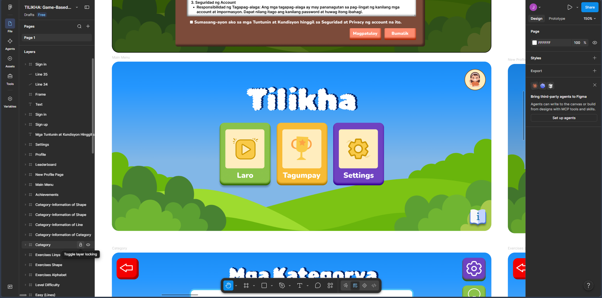

2021 — 2025
Bachelor of Science in Computer Science
University of Makati - College of Computing and Information Sciences
Developed foundational knowledge in computer science, web development, interaction design, and digital project development.

Loading...
Professional Portfolio
Bachelor of Science in Computer Science Graduate
Computer Science graduate with foundational experience in web development, interaction design, multimedia production, content management, and collaborative project work. Brings a practical, detail-oriented approach to building clear and user-focused digital experiences.
Background
2021 — 2025
University of Makati - College of Computing and Information Sciences
Developed foundational knowledge in computer science, web development, interaction design, and digital project development.
Professional History
Hands-on roles that applied design, communication, and technical skills in a professional setting.
November 2024 — July 2026
University of Makati — Center for Integrated Communications
Contributed across multiple roles such as Production Assistant, Website Content Editor of the University of Makati Website, Camera Operator, and Character Generator (CG).
Production · Web Content · CG
January 2025 — June 2026
UMak Student Multimedia Organization (USMO) — Social Media Dept.
Co-developed the school publication's news website system for UMak Student Multimedia Organization and effectively publishes content from the editorial team.
Web Development · CMS
January 2025 — May 2025
University of Makati — Center for Integrated Communications
Assisted in developing, maintaining, and editing the University of Makati website, ensuring brand alignment and creating the Brand Assets and UMak-SDGs pages.
Web Content · Brand Standards
September 2021 — December 2021
Makati City Government — Public Employment Service Office (PESO)
Assisted residents with important documents and services, including Yellow Card, Senior Booklet, Senior Card, and etc. Helped streamline barangay processing to improve service efficiency and reduce delays.
Public Service · Community Assistance
Selected Work
Academic and applied project work focused on digital communication, cybersecurity awareness, and visual identity.
January 2025 — June 2026
University of Makati Student Multimedia Organization (USMO)
Co-developed USMO's official news website using WordPress and Hostinger, building a responsive UI and CMS that helps the editorial team publish content to campus.
WordPress · Hostinger · CMS
August 2025 — May 2026
University of Makati
Led this thesis project as group leader and primary researcher, directing methodology, research design, and evaluation in line with ISO/IEC 25010 usability standards.
Research · Game-Based Learning · ISO/IEC 25010
2025 - 2026
University of Makati
Edited and organized the university's official logo guidelines, covering seal, color, and typography usage. The project continues post-graduation under UMak's administration.
Brand Guidelines · Visual Identity
Capabilities
Core competencies applied across design, development, and communication work.
Brand Audit
Brand Management
HTML
Interaction Design
PHP
Policy Compliance
UI/UX Design
Visual Design
Website Content
Toolkit
Software and platforms used across design, development, and content work.
Figma
Canva
Adobe Illustrator
WordPress
Visual Studio Code
Beyond Technical Work
Soft skills and leadership qualities developed through academic, organizational, and team-based work.
Team Leadership
Communication
Time Management
Problem Solving
Adaptability
Collaboration
Goal Setting
Critical Thinking
Active Listening
Development
Programs and trainings attended, each showing the certificate type and the seminar or course it was issued for.
Successfully achieved student level credentials for completing the Introduction to Cybersecurity course.
Active participation in a foundational session on responsible AI literecy and workforce readiness, presented by Microsoft Philippines.
Appreciation for valuable contributions as a production assistant, website content editor, camera operator, and CG operator for university-wide events, demonstrating versatility and readiness to support various needs at the Center for Integrated Communications.
Recognizes the technical expertise and dedication in building the official USMO website - greatly enhancing the organization's digital presence, communication, and community engagement.
Session exploring how new IT graduates can foster an inclusive environment and promote belonging in the workplace.
Proof of Work
Screenshots and files showcasing the projects listed above, and other digital creations.



Beyond Information
Explore additional experience, skills, certificates, and activities outside the main resume.
View Beyond InformationCharacter & Work References
Website, Branding Management & Livestream Production
University of Makati - Center for Integrated Communications
Director
University of Makati - Center for Integrated Communications
Fill out the form and it'll open your email app with a message ready to send to me.
Contact
For opportunities, collaborations, or project-related conversations, please feel welcome to get in touch.